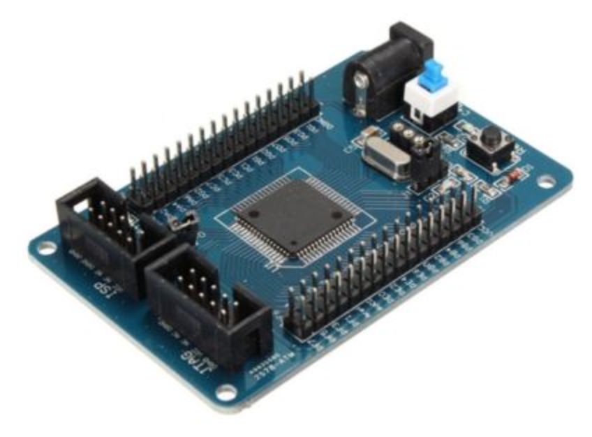
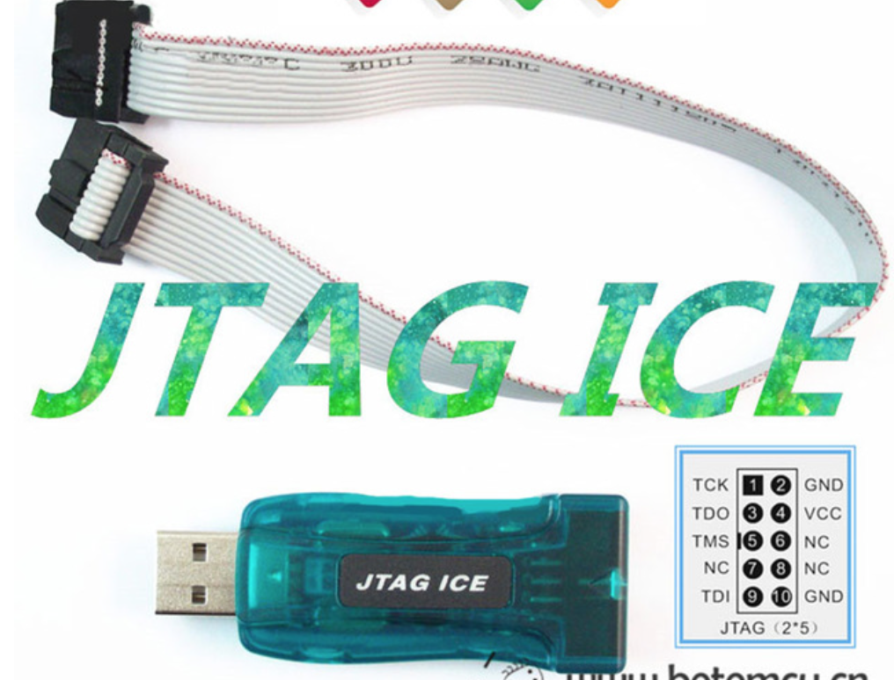

 Arduino is fun and easy, and it gives the best introducton to AVR processors. However, if you want to build something useful, you’ll soon hit the wall. Arduinio has a huge collection of shields, and supporting libraries for them, but developing a well-designed system is difficult when it comes to debugging. This is due to the fact that Arduino IDE hides most of the intricacies of AVR MCU. If you are used to debug program using breakpoints, stepping and tracing through lines of code, the Arduino IDE is no help. The AVR Studio development environment from Atmel is the saviour here. However, it can’t connect to an Arduino board through the USB port. Fortunately, most Arduino boards have a special header called ICE (in-circuit-emulator), which is actually an SPI (serial peripheral interface) connector. A special hardware tool, for example AVR ISP MK II is needed to connect. There are other alternatives too.
AVR dev-board
An alternative to Arduino board is to use a development board. Retailer websites like Aliexpress have good ranges of development boards with Atmel processors. In this post, I have used the board found here. The board uses an ATMega128 chip, has both JTAG and ISP connectors, could be powered by external power supply or from the JTAG. There is an on-board toggle switch to change power supply source. the As an addedd bonus the board has two LEDs connected to bits 0 and 1 of port A. This is quite useful for testing the board. If desired the LEDs can be disconnected by taking the jumper (next to LEDs) off.
Programmer device
You might know that the Arduino IDE uploads program (compiled sketches) to an Ardiuno board using serial port (emulated over the USB). Under the hood there is also a small program, already put into the flash memory of the board during manufacturing, handles the receiving of program code from Arduino IDE and writes onto the flash memory. That piece of code is often called Arduino bootloader (not in tradional meaning of booting off course). The actuall uploading of program is handled by a software tool called avrdude. It is possible to use avrdude to manually upload program as long as the MCU has the bootlaoder installed. For the dev-board I am using, there is no bootloader, so we need either a JTAG or ICE hardware tool. Such tools don’t need any helper other than the MCU itself. For the porpose of this post, I used a JTAG programmer tool. The JTAG programmer/debugger I used is bought from Aliexpress.

Programming setup
I’ll write a simple test program in C language to check the dev-board. The best way of doing this (for programmers with deskop programming background) is to use the IDE provided by Atmel. For this post I used AVR Studio version 4.18. Though the latest version is 7, for beginners to keep things under control version 4 is just adequate.
So, if you are following to do the same, download and install AVR Studio (it only runs on Windows). The installer also installs the USB driver software required to use the JTAG programmer.
If everything goes smooth, run AVR Studio and select a new project. Provide a name and location for the project, and select Project type: AVR GCC. Hitting Next will bring the Degug/programming platform, choose JTAG ICE (or the suitable one based on your programmer), and the MCU type. The board I am using has an ATMega128.
I named the project TestBoard, the wizard created the project and an empty file named TestBoard.c. Following is the code I typed in into TestBoard.c file.
//
// File name: TestBoard.c
// Purpose: Alternately blinks the two LEDs connected
// at Port A bit 0 and bit 1.
//
#define F_CPU 1000000
#include <avr/io.h>
#include <util/delay.h>
int main (void)
{
// all bits in Port A are set as Output
DDRA = 0xFF;
// send out all zeros to turn OFF the LEDs
PORTA = 0x00;
while(1) {
// LED on PA.0 is ON, PA.1 is OFF
PORTA = 0x01; // binary 0000 0001
_delay_ms(1000); // delay 1 sec
// LED on PA.0 is OFF, PA.1 is ON
PORTA = 0x02; // binary 0000 0010
_delay_ms(1000); // delay 1 sec
}
return 0;
}
Explanation
The C program code first defines the processor clock frequncy via F_CPU. This is required for the delay functions used in the program. The program first initializes Port A as all output, and sends zero to the port A. This turns the LEDs off (if they were ON before). Then we enter a loop where we first write 1 to first LED and 0 to second LED. After a second delay, we write 0 to first LED and 1 to the second LED. Then again a second of delay. This gives an impression of alternate flushing LEDs.
Output
A short clip showing the LEDs blinking.
Links to software and hardware
- The development board.
- JTAG debugger/programmer.
- Atmel AVR Studio. Scroll down for 4.18.